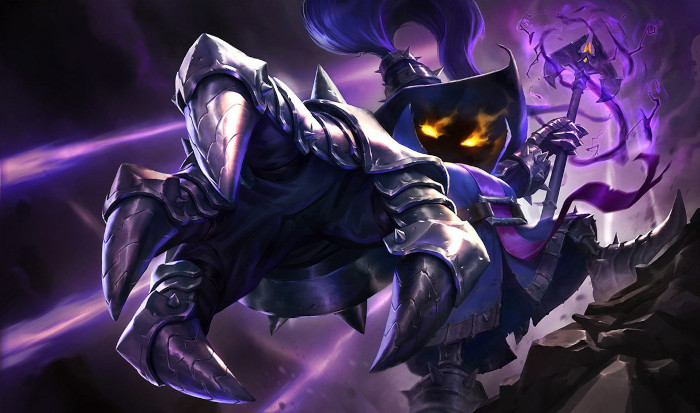

Mid lane players are often considered the most essential role on the team for the fact that they play in the center of the map and are therefore the closest to the rest of the team. Because they are close to the rest of the team and could need to rotate often, midlaners commonly have abilities that make them move quickly and/or play from a longer range. These characteristics are met by mage characters, which specialize in high damage, high area of effect, but long cooldown abilities. These abilities need to be aimed to be landed, which means another important characteristic of mid lane players is they need to be able to dodge these spells and be able to land spells on players trying to dodge them.
Lux (above) and Veigar (below) are two example of magic weilding mid laners.
To see a list of all Mid Laners, click Here